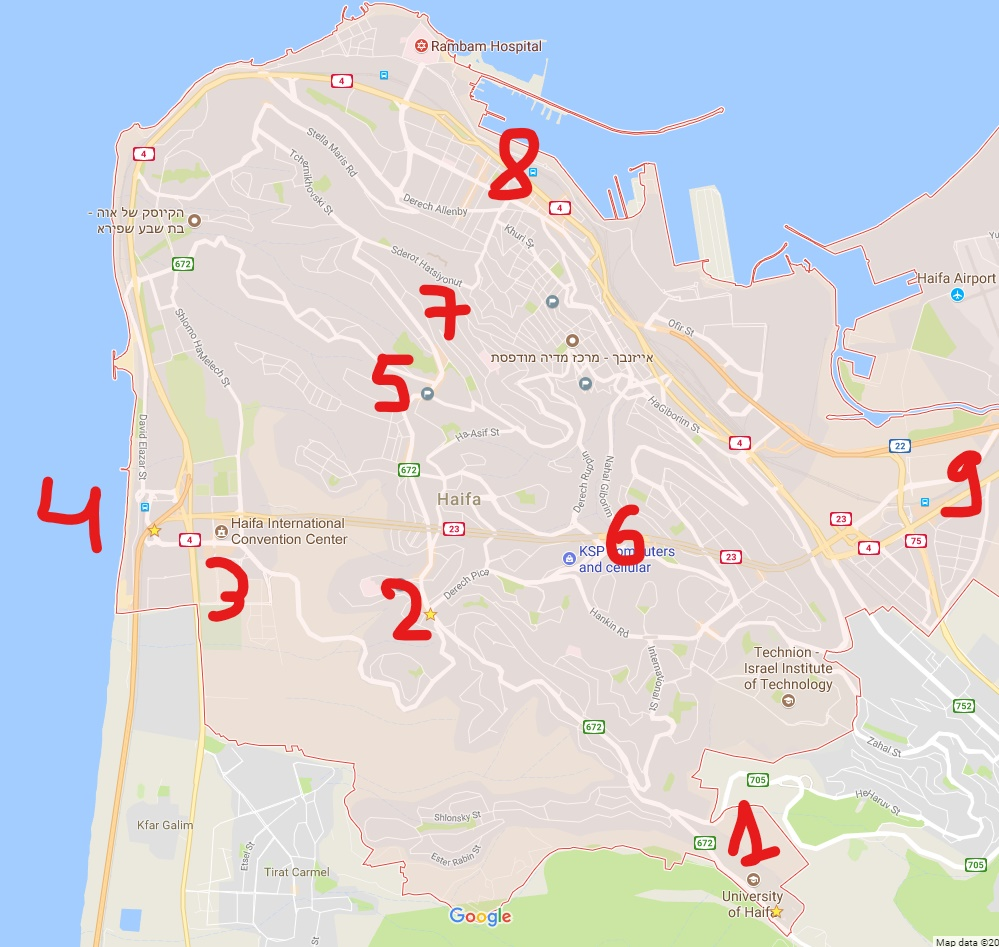

International Students guidebook to Haifa university and
dorms
Before coming to Israel
Shutdown
Sunday to Thursday: regular business day. Everything
opens on this days.
Regual public transportation gradually stop around
9-10pm.
Luckily on Haifa we have night lines - not the fastest
lines, but very useful. They start around 10:30pm and
ends at 4am.
Friday: short day.
Businesses gradually shuts down. Around 3pm, most
places are closed.
Pubs, clubs and restaurants are opening around 9-10pm.
Thank god, we have night lines also on Friday evening-
line number 200.
Saturday: Israels day off.
Most stuff are closed during the day and reopens on
Shabatt end around 7-8pm. Some, not all, of the public
transportation resumes for 4-5 hours
During the day we have 1 bus line that goes from the
dorms each hour- line number 37
National holidays
The holiday evening is like Friday.
The following day is like Saturday.
Notice that some Holidays differs in their behavior.
Flight tickets
Careful while booking your flights. In Israel, public
transportation's availability varies on weekends and on holidays.
You should avoid coming or leaving on Friday and Saturday. Also,
make sure there is no holiday on this date. Otherwise, you will be
stuck with no cheap way to come from the airport to Haifa's
dorms(see 'shutdown' chapter above). And if you did come here and
there is no public transportation, there is a service called
'Moniyot Sherut'. It's basically a taxi of 10 people that waits
near the airport and will drive to Haifa for the price of around
120 nis only when it fills up(could take a while). To be honest,
it's quite nice because it will take you directly to the dorms
without needing to change from the train to the bus. The downsides
are that it will distribute all the passengers before you(we are
kinda the last stop), and also there is no guarantee there will be
a Sherut taxi waiting.
After landing
If you reached on a 'regular day'(Sunday-Thursday, not a holiday
and between 7:00 to 17:00) this is the fastest route:
Go to the train(there is a train terminal right on the
entrance).
Destanation: "Hof ha'Carmel central station" - 1:15 hours
drive
Walk out from the train station and go to the central bus
station(very short walk)
In Israel we use "Rav-Kav", a card that you can charge with
money and use it on the buses and trains. It is very recommended
to get one on each of the central bus stations. It allows free
reuse in the time frame of 90 mins. In order to get a 33%
discount, first get a paper that states you are a student (ask the
Int' school to give you) and then take that with you to a central
bus station to get your Rav-Kav card.
HEADS UP: Each bus has a Number and final destination
written on it. A common mistake is to get on a bus just because of
it's number. Some lines, like 146, go by the university but in
both directions! This happens because both buses diverge from
their route to go by the university, pick up passengers, and go
back to their route. If you are not sure, ask the driver if he
reaches your destination.
The bus rides' fees depend on areas. In Haifa, you can get
on the bus without stating your destination, It's the same price,
around 6 shekels. If you go from Haifa to a city near by, tell the
driver and he will charge you accordingly.
The closest station to the dorms is
"University/Multi-Purpose" and NOT "University/Eshkol Tower". See
campus map
Key buses:
37- starts/finish at "University/Multi-Purpose"(works
also on Saturday) - Horev center, Merkaz Carmel, Down town
24- starts/finish at "University/Multi-Purpose" - Horev
center, Down town, Hof ha'Carmel central station (careful, to
Hof ha'Carmel take bus 146. bus 24 takes much more time).
146- starts at Merkazit HaMifrats central station to Hof
ha'Carmel central station - Horev center, Haifa mall, Hof
ha'Carmel station, Beach
146- starts at Hof ha'Carmel central station to Merkazit
HaMifrats central station - Cinamall - Lev HaMifrats mall
137- starts/finish at "University/Multi-Purpose" - Grand
Canyon mall
The 2 closest train stations are Hof ha'Carmel central
station and Merkazit HaMifrats central station. You can buy
tickets using your Rav-Kav.
Special taxis
A bit expensive but if you want/have to use special taxis, i
would recommend to use 'Gett taxi'. Also, you should connect your
credit card to the app so no 'funny' business would happen.
You can go shopping and eat there. Take bus 37A (NOT
37)
On a walk distance (5mins), you can go to the park
(little Switzerland).Amaizing place. To gate back(the gate is
closed at 10pm), there is a Carousel gate close to the square.
Press the button and the dorm guard will buzz you in
Multi-Purpose building
Coffix- coffee and food - low prices
Student building - you will be studying there
Terras and Rabin building
Gym on floor 0 (low price to enroll)
Pilpelet on floor 3 - food place - low prices
Aroma on floor 6 - food place - high prices but very
good food
Greg on floor 7(outside) - food place
main/Eshkol building. Got 3 floors: the 500, 600, 700.
(Greg is the 600, the library is the 700)
500- Mini Market and some food places. Belongs to the
student union so prices are low to medium
600- Hecht Museum and Auditorium
600- Main university food court - Shawarma, salad
stand, Chinese, home food...
600- Akademon - school and home supplies store
600- Klalit small medical
center - its above the Akademon
700- library and entrance/exit to the Eshkol bus
station
Guarded entry/exit: open from 8am to 8pm (going from the
dorms to the university 24/7 - Carousel gate)
Guarded entry/exit: open 24/7.
University/Multi-Purpose station
the dorms boardwalk
Mini Market, Public bathroom, Dorms Club(has a pub in it)
Financial office
Dorms main management office
The 100-800 number are the blocks. The first number of
you apartment is the block (343 is block 300)
***In case of a malfunction in your room, open a
malfunction form on the dorms site
***In case of a problem, call the Dorms guard station:
048240370
Haifa
haifaEdited.jpg 
Haifa University
Horev Center(many lines)
Haifa mall(146 to Hof haCarmel)
Hof ha'Carmel central station and Nice beaches(146 to Hof
haCarmel)
Carmel center(many lines)
Grand canyon(137)
The Baha'i Gardens
Down town(37 and more)
Merkazit HaMifrats central station(146 to Merkazit
HaMifrats)
Miscellaneous
Phone sim card
Try the Akademon store on the 600 floor in the main
building. Last year (2017) "019" had a deal - buy a sim card and
pay each month in advanced about 50 shekels and get unlimited
calls and sms and something like 5GB. It's a good deal.
Free Wifi on campus
On the dorms, each apartment has a modem inside of it(or a
lan connection) and the price is included in your rent fee. The
internet isn't the best but we can work with it
Eduram network: good signal on campus (except on the dorms).
I'm not sure if you get a Username, but if you do then you connect
to it as so: Username is yourID@haifa.ac.il and the pass is to
your campus account.
Aircarmel network: ok signal on the dorms boardwalk and good
on campus. Ask the International school to supply a password and
user name
On both Eduram and Aircarmel, you can ask a local student to
connect with his Username and pass :)
Weather
One important thing to remember, the dorms are on top of
Carmel mountain.
Coming on Summer
time Common mistake is to see the weather and say: "Wow,
it's so hot. I don't need to take long clothes". True,it is hot.
But on the nights most people like to have a light jacket with
them. It gets windy sometimes. So you might want to pack 2 or 3
light jackets (don't bring heavy coats).
Coming on Winter
time Just like the summer mistake, also here people see
the weather and bring light winter clothes. In the winter, its
really freezing in here. I recommend to bring at least some
'heavy' winter clothes.
Last update: 5/10/2017
The information on this web page was gathered from various
students.We hope we didn't mislead you. Please send feedback to giladeini@gmail.com if you found a
mistake, found that a topic is missing or just to tell us if this
web page is helpful. If we get feedback, we will try to improve the
web page.